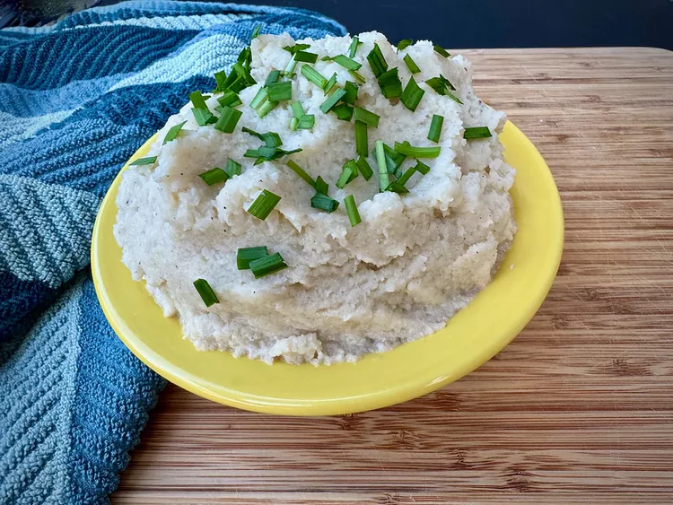

Garlic mashed caulifower

Description
Next time you want to sneak in a vegetable, instead of mashed potatoes, try this for your family dinner table.
ingredients
- 2 tablespoons unsalted butter
- 1 tablespoon minced garlic, or to taste
- 2 pounds frozen riced cauliflower, thawed
- 1 teaspoon salt, or to taste
- 1/4 teaspoon ground black pepper
- 1 pinch nutmeg, or to taste
- 1/2 cup chicken broth
Directions
- Melt butter in a large skillet, over medium heat. Add minced garlic and cook until fragrant, about 30 seconds.
- Stir in thawed, riced cauliflower, salt, pepper, and nutmeg. Add chicken broth and bring to a boil, stirring frequently.
- Cook, covered, about 8 minutes, then remove cover and continue cooking and stirring until most of the liquid evaporates,
an additional 5 to 8 minutes.
- Use an immersion blender to purée cauliflower until smooth. If an immersion blender is not available, spoon cauliflower into a
blender to purée. When smooth, place in a serving bowl and garnish with snipped chives.
Main site